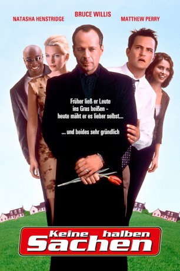

gesehen am 17.10.2016
gesehen am 17.10.2016Alternativ: The Whole Nine Yards gesehen am 17.10.2016
 
 IMDB-Wertung: 6.7 / 10
IMDB-Wertung: 6.7 / 10  Metascore:
Metascore: 
Das Leben des erfolglosen Zahnarztes Oz Oseransky könnte ganz einfach sein, gäbe es da nicht seine nervige Ehefrau, eine geldgierige Furie, die ihn wegen seiner Lebensversicherung lieber tot sehen würde. Doch plötzlich kommt Schwung in Oz Leben, denn Jimmy "Die Tulpe" Tudeski zieht in das Haus nebenan. Jimmy ist ein knallharter Mafiakiller, auf der Flucht vor seinem ehemaligen Auftraggeber, der dafür sorgt, dass Oz Leben nie mehr so sein wird, wie es einmal war. Plötzlich befindet er sich mitten in einem chaotischen Abenteuer, in dem eine Leiche nach der anderen seinen Weg pflastert und die Überlebenden am Ende zehn Millionen Dollar erwarten...
Jahr: 2000
Dauer: 98 Minuten
FSK: 16
Land: USA Studio: Warner Bros.Tonspuren: DD5.1 - ,
Untertitel: Englisch,
Auflösung: 720p (1280x720) Größe: 5007 MB
Regisseur: Jonathan Lynn
Drehbuch: Mitchell Kapner
Soundtrack: Randy Edelman, Gary Gold
Darsteller:
 Bruce Willis als Jimmy Tudeski
Bruce Willis als Jimmy Tudeski Matthew Perry als Oz Oseransky
Matthew Perry als Oz Oseransky Rosanna Arquette als Sophie
Rosanna Arquette als Sophie Michael Clarke Duncan als Frankie Figs
Michael Clarke Duncan als Frankie Figs Natasha Henstridge als Cynthia
Natasha Henstridge als Cynthia Amanda Peet als Jill
Amanda Peet als Jill Kevin Pollak als Janni Gogolak
Kevin Pollak als Janni Gogolak Harland Williams als Agent Hanson
Harland Williams als Agent Hanson Richard Jutras als Agent Morrissey
Richard Jutras als Agent Morrissey Mark Camacho als Interrogator #1
Mark Camacho als Interrogator #1Datei: X:\2-Dilogie(G-M)\Keine halben Sachen\Keine halben Sachen (2000, FSK16, 1280x720).mkv seit 29.12.2015
Festplatte: HD Collection-2(A-Z)-3(A-M)
 Alle Filme aus Gruppe '2-Dilogie(G-M)\Keine halben Sachen'
Alle Filme aus Gruppe '2-Dilogie(G-M)\Keine halben Sachen'